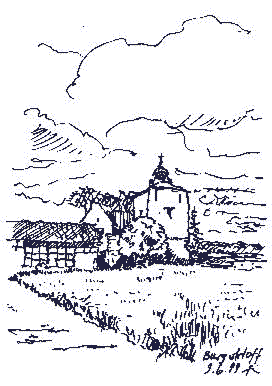
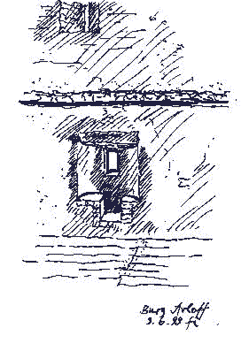
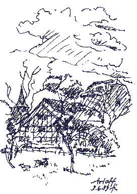
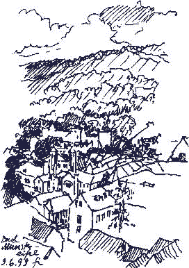
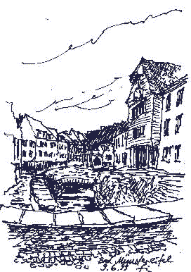
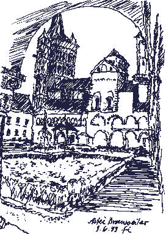
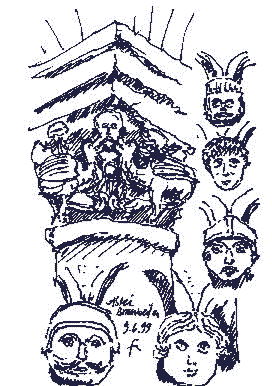

Inhaltsverzeichnis - Sitemap - über 1.500 Druckseiten unabhängige Bauinformationen
Inhaltsverzeichnis - Sitemap - über 1.500 Druckseiten unabhängige Bauinformationen

Vor der Burg...
Fensternische Nord
Bad Münstereifel:

Von der Stadtmauer...
InnenstadtAbtei Brauweiler, Sitz des Rheinischen Amtes für Denkmalpflege:

Kreuzgang...
In Abteikirche, Bauskulptur